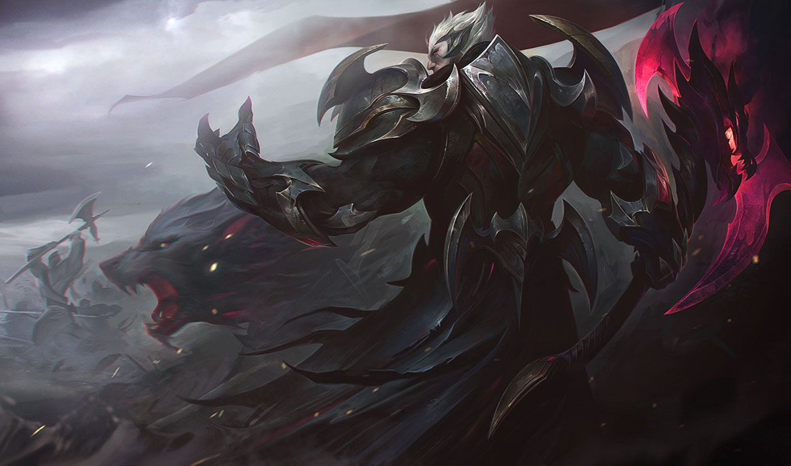

Darius and his brother Draven grew up as orphans in the port city of Basilich. Darius struggled to provide for them both, constantly fighting with gangs of older urchins and anyone else who threatened his little
brother—even
the city guard. Every day on the streets was a battle for survival, and Darius earned more scars by his twelfth summer than some soldiers do in a lifetime.
After Basilich was seized by the expanding Noxian empire, the victorious commander Cyrus saw the strength in these defiant brothers, and they found a home within the ranks of his warhost. Over the years, they fought in many grueling campaigns
of conquest from one end of the known world to the other, as well as crushing a number of rebellions against the throne.
Within the empire, anyone could rise to power, no matter their birth, culture, or background, and none embraced this ideal more fervently than Darius. From humble beginnings, he rose steadily through the ranks, always putting duty before all
else, and garnering great respect for his aggression, discipline, and refusal to ever take a backward step. On the bloodsoaked fields of Dalamor Plain, he even beheaded a Noxian general after the coward ordered a retreat. Roaring in defiance
and hefting his bloodied axe overhead, Darius rallied the scattered warbands and won a great and unexpected victory against a far more numerous foe.
He was rewarded with a senior command of his own, attracting many thousands of eager recruits from across the empire. Darius turned the majority away, accepting only the strongest, the most disciplined and iron-willed. Such was his fearsome
notoriety, even in the lands beyond Noxus, that it was not uncommon for entire cities to surrender at the first sight of his banners.
After a grinding victory against the cloud-fortresses of the Varju, a proud warrior people who had resisted decades of Noxian aggression, Darius was named the Hand of Noxus by Emperor Boram Darkwill himself. Those who knew Darius best knew he
craved neither power nor adulation—he wished merely to see Noxus triumph over all—so Darkwill ordered him and his warhosts far north into the Freljord, to finally bring the barbarian tribes to heel.
The campaign dragged on for years, ending in a bitter, icy stalemate. Darius narrowly survived assassination attempts, ambushes, and even capture by the vicious Winter’s Claw. He was growing weary of endless wars of attrition, and returned to
Noxus to demand a reconsolidation of the military.
He marched his veterans into the capital, only to find that the emperor was dead, killed in a coup led by Jericho Swain. The act had been supported by many allies, including Darius’s own brother, Draven.
This was a difficult position. As Hand, many of the noble houses would expect Darius to avenge Darkwill, but he had known and greatly respected the disgraced general Swain, and had spoken against his discharge after the botched offensive in
Ionia some years earlier. The oaths of the Hand were to Noxus, not any particular ruler, and Swain was a man who spoke honestly of his new vision for the empire. Darius realized this was a leader he was prepared to follow... but Swain had
other ideas.
With the establishment of the Trifarix, three individuals would rule Noxus together, each embodying one principle of strength: Vision, Might, and Guile. Darius gladly accepted his place on this council, and pledged to raise a new, elite
force—the Trifarian Legion, the most loyal and prestigious warriors the empire could produce—and lead the armies of Noxus into a glorious new age of conquest.

Abilities
Hemorrhage
Darius aims his attacks strategically, causing his target to bleed. This effect stacks up to five times. Enemies that reach max Hemorrhage cause Darius to gain Noxian Might, greatly increasing his
damage.
Decimate
Cost: 30/35/40/45/50 Mana
Range: 1
Darius winds up and swings his axe in a wide circle. Enemies struck by the blade take more damage than those struck by the handle. Darius heals based on enemy champions hit by the blade.
After a short delay, Darius swings his axe around himself, striking enemies in its path. Enemies hit by the axe's blade take 40/70/100/130/160 (+105% bonus Attack Damage) physical damage. Enemies hit by the handle take 35% damage (does not
apply Hemorrhage).
Darius heals for 12% of his missing Health per enemy champion hit by the blade (max: 36%).
Crippling Strike
Cost: 30 Mana
Range: 300
Darius's next attack strikes an enemy's crucial artery. As they bleed out, their Movement Speed is slowed.
Darius's next basic attack deals 0 physical damage and slows the target by 90% for 1 second(s).Crippling Strike refunds its Mana cost and 50% of its cooldown if it kills the target.
Apprehend
Cost: 45 Mana
Range: 535
Darius hones his axe, passively causing his physical damage to ignore a percentage of his target's Armor. When activated, Darius sweeps up his enemies with his axe's hook and pulls them to him.
Passive: Darius gains 15/20/25/30/35% Armor Penetration.
Active: Pulls in all enemies in front of Darius and slows them by 40% for 1 second(s).
Noxian Guillotine
Cost: 100/100/0 Mana
Range: 460
Darius leaps to an enemy champion and strikes a lethal blow, dealing true damage. This damage is increased for each stack of Hemorrhage on the target. If Noxian Guillotine is a killing blow, its cooldown is refreshed for a brief duration.
Leaps to target enemy champion and strikes a lethal blow, dealing {{ damage }} true damage. For each stack of Hemorrhage on the target, Noxian Guillotine deals an additional {{ rdamagepercentperhemostack*100 }}% damage.
Maximum Damage: {{ maximumdamage }}If Noxian Guillotine kills the target, it may be re-cast at no cost within {{ rrecastduration }} seconds.At rank 3, Noxian Guillotine unlocks - its cooldown resets entirely on kills and it no longer has a
Mana cost.